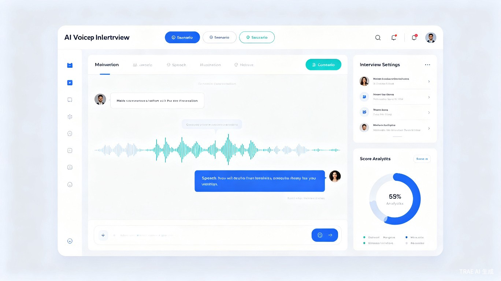

1 创意名称与创意介绍
创意名称
AI实时语音模拟问答平台（AI Voice Interview Simulator）
想解决什么问题
求职面试、公务员考试、研究生复试、比赛答辩等高压力口语场景中，用户缺乏真实的模拟练习机会。传统备考方式依赖文字记忆或对镜练习，无法获得即时反馈与针对性改进建议，导致临场发挥失常、表达逻辑混乱、紧张焦虑等问题频发。
为什么会想到做这个
在亲身经历研究生复试和求职面试的过程中，我发现备考资源严重不均衡——一线城市考生可以报昂贵的线下模拟班，而大多数学生只能靠自己"闷头练"。与此同时，大语言模型和语音识别技术已经成熟，完全可以构建一个随时随地可用、费用低廉、反馈专业的AI模拟面试工具，让每个人都能平等地获得高质量的面试训练。
大概是什么产品
一款Web端智能语音交互平台，用户选择面试场景后，AI扮演面试官通过语音实时提问，用户语音作答，系统实时分析回答内容、逻辑结构、语言表达，并生成多维度评分报告和改进建议。支持面试回放、逐句点评、弱项专项训练等功能。
2 目标用户及痛点
面向哪些用户
核心使用场景
求职面试模拟
模拟互联网、金融、国企等行业的结构化面试与行为面试场景
公务员面试训练
针对无领导小组讨论、结构化面试等公考面试形式进行专项训练
答辩与演讲练习
研究生复试、毕业答辩、学术会议报告、比赛答辩等口语表达训练
当前痛点
- 缺乏真实模拟环境：大多数人只能对镜练习或与同学互相模拟，缺乏专业面试官的追问压力和真实氛围，难以适应正式场合。
- 无法获得即时专业反馈：练习后不知道自己哪里表达不清、逻辑哪里有漏洞，缺少客观的第三方评价体系。
- 备考成本高昂：线下模拟面试课程动辄数千元，且时间地点受限，三四线城市和农村学生几乎无法获得优质资源。
- 心理压力难以克服：面试焦虑是普遍问题，但缺少循序渐进的脱敏训练工具，用户无法在低风险环境中逐步建立自信。
- 练习效率低下：没有系统化的训练计划和进度追踪，用户不知道自己是否在进步，容易陷入无效重复。
3 价值与意义
商业价值
面向数千万求职者和考生群体，可通过免费基础功能+付费高级场景的Freemium模式实现商业化。同时可拓展B端市场，为高校就业指导中心和培训机构提供SaaS解决方案。
效率提升
将传统需要数周准备的面试训练压缩到高效的人机交互中。AI秒级反馈替代人工点评，用户可随时随地进行高频次练习，大幅提升备考效率和面试通过率。
社会价值
打破地域和经济壁垒，让偏远地区和低收入群体也能获得专业级面试训练资源，促进教育公平和就业机会均等化，助力人才合理流动。
数据驱动
积累海量面试问答数据，可反哺AI模型优化，形成数据飞轮效应。同时可为高校和政府提供就业能力分析报告，辅助教育决策。
4 产品功能构想
核心功能
- 多场景面试模拟：内置求职面试、公务员面试、研究生复试、比赛答辩等预设场景，用户一键选择即可开始训练
- 实时语音交互：基于语音识别（ASR）与大语言模型（LLM）实现自然的双向语音对话，AI面试官能根据回答内容进行追问
- 多维度智能评分：从内容完整度、逻辑清晰度、语言流畅度、情感表达、专业匹配度等维度进行量化评分
- 逐句回放与点评：支持面试全过程回放，AI对每一句回答给出具体改进建议和优秀表达标注
- 个性化训练计划：根据用户弱项自动生成专项训练任务，支持自定义训练目标和进度追踪
- 面试报告导出：生成可视化面试表现报告，方便用户复盘或分享给导师、教练参考
5 产品界面示意

6 技术架构概览
| 技术层 | 技术方案 | 说明 |
|---|---|---|
| 语音识别（ASR） | Whisper / 讯飞语音 | 将用户语音实时转为文字，支持中文多方言 |
| 大语言模型（LLM） | GPT-4o / Claude / DeepSeek | 生成面试问题、分析回答质量、给出改进建议 |
| 语音合成（TTS） | Edge TTS / CosyVoice | 将AI面试官的文字回复转为自然语音输出 |
| 前端框架 | React / Vue + WebRTC | 实现低延迟实时语音交互与波形可视化 |
| 后端服务 | Python FastAPI + WebSocket | 处理实时通信、评分计算、数据存储 |
| 数据分析 | NLP情感分析 + 评分模型 | 多维度量化评估用户面试表现 |
7 发展规划
| 阶段 | 目标 | 核心功能 |
|---|---|---|
| V1.0 MVP | 验证核心价值 | 基础语音对话面试、通用评分、3个预设场景 |
| V2.0 成长 | 丰富场景与个性化 | 10+行业场景、个性化训练计划、弱项专项训练 |
| V3.0 规模 | B端拓展与生态 | 高校/机构SaaS版、面试数据分析平台、移动端适配 |
总结
AI实时语音模拟问答平台致力于用人工智能技术消除面试训练的资源壁垒，让每一位求职者、考生和演讲者都能获得专业、高效、低成本的口语训练体验。我们相信，通过技术的力量，每一次模拟练习都是通向自信表达的一步。